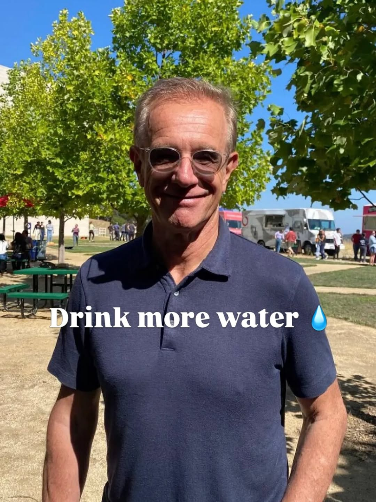

There really is no credible scientific evidence for the “drink 8 glasses of water per day rule”, although it certainly won’t hurt you to do it if you find that it helps.
Also, studies show that coffee is not dehydrating, as it is often portrayed.
A shared summary of Valtin 2002 finding no source for the 8x8 rule, plus intake data from Irish adults, with Louis noting coffee is not dehydrating.
There really is no credible scientific evidence for the “drink 8 glasses of water per day rule”, although it certainly won’t hurt you to do it if you find that it helps.
Also, studies show that coffee is not dehydrating, as it is often portrayed.
The "drink eight 8-ounce glasses of water a day" rule is one of the most repeated nutrition recommendations in modern health culture. It also has no traceable scientific origin.
Heinz Valtin (2002, American Journal of Physiology) was a kidney physiologist at Dartmouth Medical School. He set out to find the source of the "8x8" rule. He searched electronic databases. He searched older literature not indexed in databases. He consulted nutritionists who specialized in fluid balance research. He found nothing. No primary study supports the recommendation. The rule appears to have entered the cultural vocabulary without a citation behind it.
What the data on actual fluid intake does show is informative. O'Connor and colleagues (2014, Journal of Human Nutrition and Dietetics) measured total water intake in a nationally representative sample of 1,500 Irish adults using 4-day semi-weighed food records. Mean total water intake averaged 2.31 L per day (2.52 L for men, 2.09 L for women). Of that total, 67 percent came from beverages of all kinds, and 33 percent came from moisture in food. Plain drinking water was only one component of the beverage fraction. Tea, coffee, milk, juice, and other drinks all contributed.
Killer and colleagues (2014, PLOS ONE) addressed the related "coffee causes dehydration" claim. Fifty habitual male coffee drinkers (3-6 cups per day at baseline) participated in a 3-day counterbalanced crossover. They consumed either 4 cups of coffee daily (4 mg/kg caffeine) or matched volumes of water. Total body water was measured directly using deuterium oxide dilution. Urinary and hematological hydration markers were tracked. The result: no significant difference in total body water between trials (51.4 kg vs 51.5 kg), no difference in 24-hour urine volume, no difference in urine osmolality or specific gravity. In habitual coffee drinkers, coffee provides hydration comparable to water.
The mechanism behind all of this is the osmoregulatory system. Specialized neurons in the hypothalamus monitor blood osmolality continuously. When osmolality rises, vasopressin is released and the kidneys conserve water. When it falls, vasopressin drops and the kidneys excrete the surplus. Thirst is the conscious arm of the same system. In healthy adults, this regulation is precise across a wide range of intake patterns. The body does not require an external counting rule to maintain water balance. It has been doing this autonomously since well before drinking glasses existed.
Three caveats worth being explicit about. First, Valtin's "no evidence for 8x8" conclusion applies specifically to healthy adults in temperate climates leading sedentary lives. Athletes, anyone working or exercising in heat, the acutely ill, and individuals on certain medications all have higher fluid requirements. Valtin himself emphasized this in the original paper. Second, thirst sensitivity decreases with age. Older adults are at meaningfully higher dehydration risk, and the "drink to thirst" advice does not apply as cleanly. Third, Killer 2014 was conducted in habitual male coffee drinkers only. Acute caffeine in non-habituated individuals does have a mild diuretic effect, and the study cannot speak to women or non-coffee-drinkers directly. Worth noting one author was employed by PepsiCo at the time of publication. The findings are consistent with the broader literature on caffeine habituation but the COI should be acknowledged.
What this means in practice. You probably do not need to track 8 specific glasses of water. Total fluid intake from all sources averages 2 to 2.5 liters per day in healthy adults without conscious effort. Coffee and tea count toward the total. Soup, fruit, vegetables, and dairy count toward the total. Plain water is the cleanest source but it is not the only source. Thirst is a precise signal in healthy adults and the osmoregulatory system handles the rest. Increase intake during heat exposure, exercise, and illness. Pay closer attention to hydration in older adults whose thirst signal is less reliable.
The bigger principle. Hydration is one of the most heavily marketed health behaviors in the modern wellness industry. Branded water bottles, hydration apps, and "drink more water" content all rest on a counting rule that has no peer-reviewed source. The biology is more forgiving than the marketing suggests.
Valtin, American Journal of Physiology, 2002 O'Connor et al., Journal of Human Nutrition and Dietetics, 2014 Killer et al., PLOS ONE, 2014

Louis endorses a post from longevity scientist Eric Verdin urging people to drink more water as the weather warms. It notes that after 65 chronic dehydration raises risks of falls, fractures and delirium, and thirst signals weaken with age.

Gokhan shares a typical day of food (vegetable juice, tea, coffee, chicken bibimbap without rice, cheese, nuts, low-carb chocolate) and reports LDL of 71 mg/dL and high energy after about 30 days. It is a personal anecdote.
A Queen Mary University of London study in Microbial Cell found that caffeine acts via AMPK, the cellular fuel gauge, influencing growth, DNA repair and stress response. It was done in fission yeast, so human relevance is unproven.

A review of coffee and human aging reports that regular moderate coffee consumption is associated with lower all-cause mortality and fewer cardiovascular, stroke and cancer cases. Coffee and its components (caffeine, chlorogenic acids) appear to support stress adaptation and aging mechanisms.

Gokhan reposts a Harvard Health list. Include tomatoes, olive oil, leafy greens, nuts, fatty fish, berries and other fruit, and coffee; avoid refined carbohydrates, fried foods, sugary drinks, red and processed meat, and margarine, shortening and lard. He adds two daily drinks, plus green tea, hibiscus tea and coffee, to raise his Mediterranean score.
Gokhan flags a Guardian report on a US study showing coffee, eggs and white rice, as well as seafood and red meat, were associated with higher PFAS levels, highlighting how widespread the chemicals are.